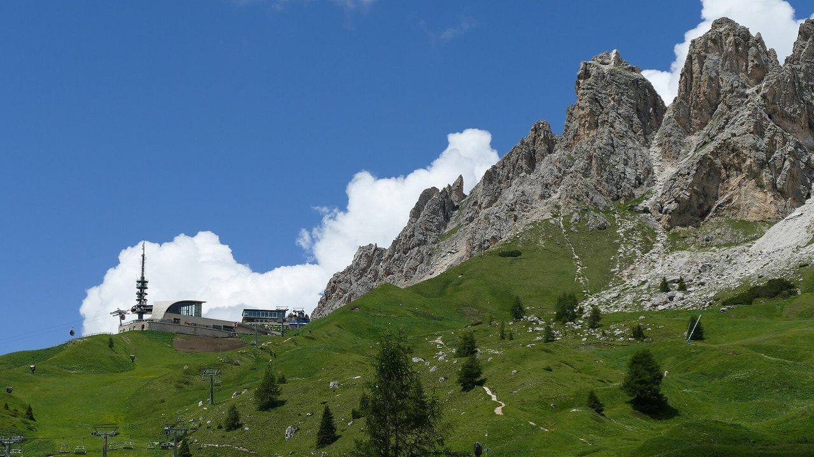

Race, Passo Gardena

Behind
Best +0:01
371W
Target 418 W-47 W
- Cadence
- 87rpm
- Heart
- 140bpm
- Speed
- 26.5km/h
Work7 of 10
0:39
Next: · 1:30 at level 22
+5.0%
445 m climbed
7.13 km
21
Resistance / 32
Solo races your best-time ghost: position reads Ahead or Behind, and solo alone gets a Pause button. Frozen at 15:51.